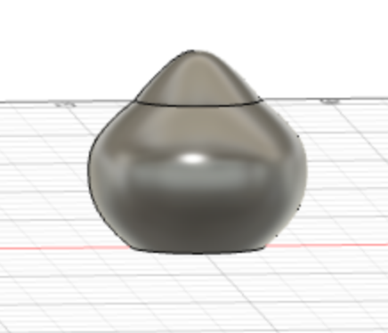
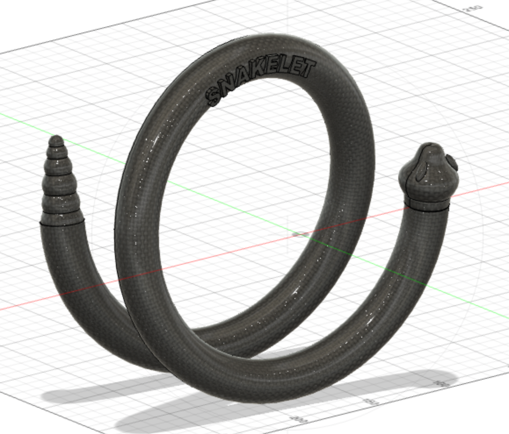

<style>
h3 {
color: DeepPink;
}
h2 {
color: DeepBlue;
text-align: center;
}
a:link {
color: green;
background-color: transparent;
text-decoration: none;
}
a:visited {
color: Orange;
background-color: transparent;
text-decoration: none;
}
a:hover {
color: red;
background-color: transparent;
text-decoration: underline;
}
a:active {
color: yellow;
background-color: transparent;
text-decoration: underline;
}
</style>
### Week 4: 3D Printing
<h1> SNAKELET </h1>
<img src="FINAL1.png" width="100"><img src="FINAL1.png" width="100"><img src="FINAL1.png" width="100"><img src="FINAL1.png" width="100">
<p1>
<i> Thee, Serpent, suttlest beast of all the field... How cam'st thou speakable of mute? </i><br><br>
For this week’s 3D printing assignment I first had a chat with Gabby about what possibilities 3D printing VS 2D laser cutting would open up. Some of the features we discussed included being able to make interlinking elements (like chainmail—Gabby showed me the super cool <a href="https://n-e-r-v-o-u-s.com/projects/sets/kinematics-dress/">kinematics dress</a>), as well as pieces which fit together, and all sorts of other 3D shapes. <br> <br>
After talking to her and looking at some items on <a href="https://www.thingiverse.com/">Thingiverse</a> I decided it would be a fun and not too complicated project to try and make a bracelet. I thought <a href="https://www.thingiverse.com/thing:365813" >this bracelet</a> was super fun and I liked the way the bracelet wraps around in a spiral, which is definitely a 3D-only element. I knew that with my elementary Fusion 360 skills, however, that I would likely not be able to make such a complicated dragon head, so I decided to shoot for the slightly simpler, less mythical form of a snake instead.<br> <br>
I started out by watching <a href="https://www.youtube.com/watch?v=3PnKBSOulwo">this super helpful tutorial</a> on how to design a 3D printed lamp in Fusion 360. Although the shape is a bit different from what I was going for, it was helpful in understanding the 3D design software more, and I would come to use the revolve technique used in it to create the snake head in my piece. <br> <br>
However, before I could work on the head, first needed to figure out how to create a spiral shape of the bracelet itself. After googling the average diameter of a bracelet (N.B. from the future: I later realised I got this very very wrong and that what I had taken for the diameter (7inches!?) was actually the circumference and the diameter is actually around 2.37 inches :)) (My excuse is that I am British and don’t use the imperial system much. But also… 7 inches….) <br>
I then watched this tutorial about <a href="https://www.youtube.com/watch?v=0hvtfb_oXDw">how to create a spiral in fusion</a> and created the body of the snake with the spiral tool.
<br><br>
Next, I moved on to the snake head. This took a lot of trial and error because I still find the sketch tool a little unwieldy for curved lines. Using the revolve technique from the lamp tutorial above, I created 2D ‘slices’ in the desired curved shape for a snake-ish head. After I created the head, I created two protruding eyes using the same technique. I also watched a short tutorial on how to merge bodies—it’s super simple using the merge tool and simply selecting the bodies you want to merge. <br>

<br><br>
For the tail, I stacked a bunch of circles in sketch, split them in half with a line, and trimmed off half so I could use revolve again for a bubbly effect! <br>
<img src=“tail.PNG” alt="drawing for tail">
<br>
Finally, after connecting all these pieces I felt that there was something missing from the sketch. Ideally I would like to do some scales across the whole body, but to be frank, I really don’t have that level of skill yet! Instead, I thought it would be a worthwhile skill to figure out how to engrave text that follows a curved surface on Fusion, which is another technique that is specific to 3D printing. I watched this <a href="https://youtu.be/KHa-mgQd0xU">cutting and extruding text tutorial</a> and decided to extrude the text for a definitely 3D effect. It took a couple tries, but it worked!<br><br>Here is my final design, awaiting printing on Monday: <br>
<br><br>
<br>
<br><br>
<b> Monday Update </b> <br>
Today Nathan took me through how to print using the PrusaSlicer software. It was a lot more straightforward than I thought it would be, and the file could be automatically exported in STL format to Prusa, from which we adjusted supports and quality of the print, and finally migrated it to the 3D printer.<br>
The print itself took just under four hours, during which I attended a three hour seminar on Petrarch. Here is a quote from Petrarch's <i> Invectives:</i> <br> <br>
<i> "Begin, be bold, never fear! You are a logician, philosophy is yours; rhetoric is your servant; and you are a leading physician." </i> <br> <br>
When I got back, the print was ready! Chipping off the support was harder than I expected, and took around 15 minutes because I was overly careful. But once I was done, I was pleased with the finished result, and it indeed fits on my wrist as a bracelet!
<br>
<img src="FINAL1.png" width="500"><img src="FINAL2.png" width="500">
</p1>